Human-Labelling-Free Transient and Bogus Classifier using Gen3 LSST Pipelines
From data extraction to model evaluation
Raphael Bonnet-Guerrini, Dominique Fouchez, Bruno Sanchez, Benjamin Racine25/09/2024
Centre de Physique des Particules de Marseille
Context and of the presentation.
Context :
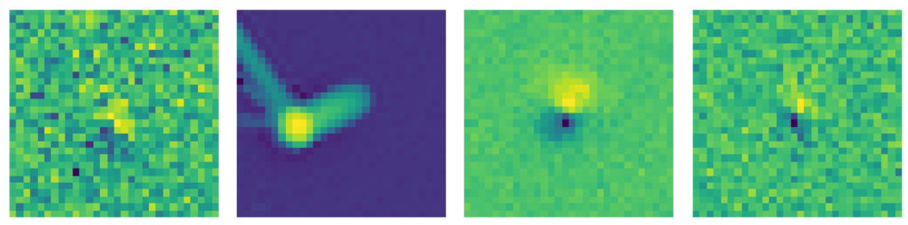
Presentation plan :
- Present the production of fake catalogs and their injection into real data using the Gen3 pipeline.
- Investigate the potential of an ML-based Transient/Bogus classifier using fake injections.
Intuitions behind this project
Key Intuitions:
⇨ Possible Machine Learning-Based Classification Task
We train the model to classify between injections and real data, and in reality, it classifies between bogus and transient.
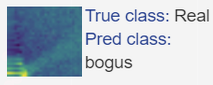
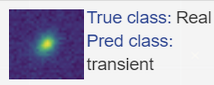
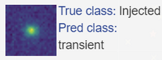
⇨ False Positive Predictions Are the Potential Real Transients
⇨ False Positive Predictions Are the Potential Real Transients
After training, real transients will be classified as transients with the injected data.
They are false positives since we assume that all detections from real data are bogus.
They are false positives since we assume that all detections from real data are bogus.
Catalog creation and pipeline production for Galaxy-Based Injection
Galaxy Identification
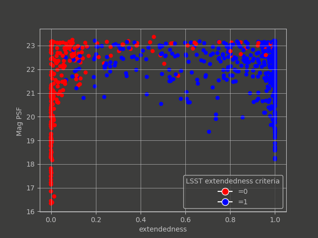
Extendedness measurement vs
extendedness criteria.
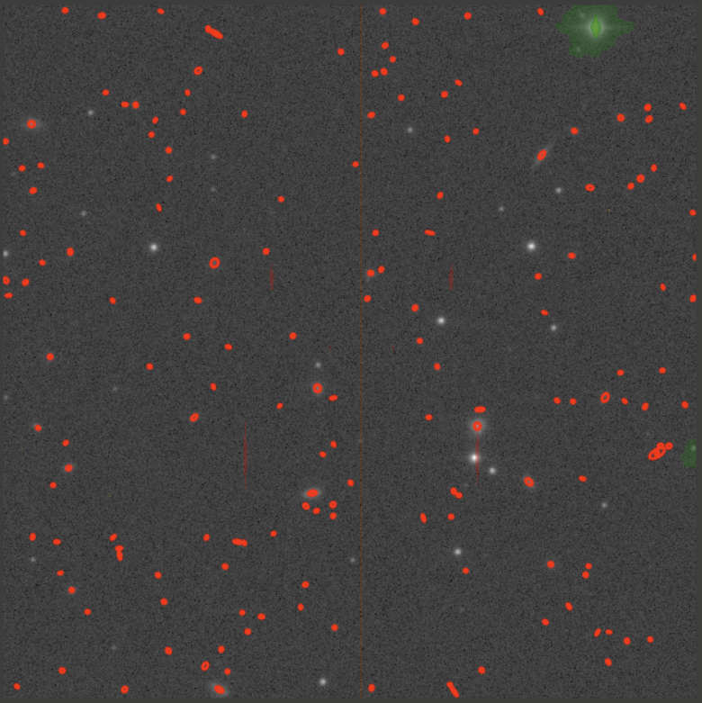
Galaxies circled in red.
Magnitude and Positions of the Injections
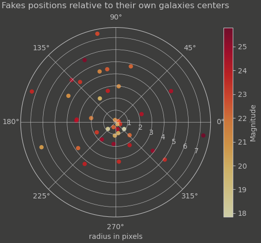
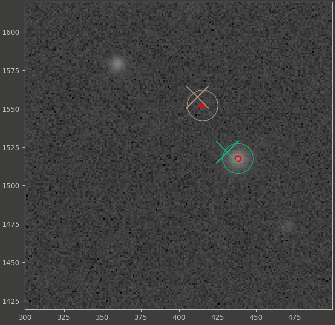
Catalog Creation, Butler Ingestion and pipeline processing:
ingest_injection_catalog \
-b $BUTLER_REPO \
-i $CATALOG_REPO/g_band_catalog.csv g \
-o u/rbonnetguerrini/inject_input_g
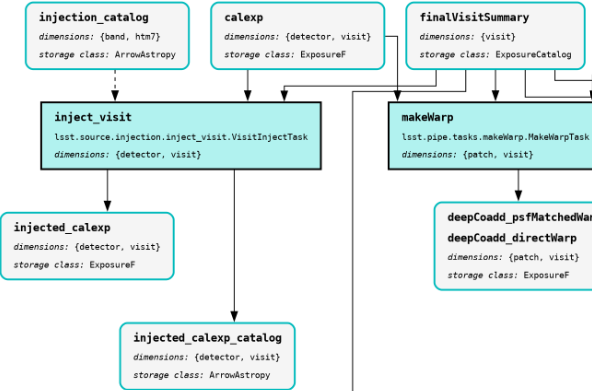
Data Presentation
The HSC RC2 subset is composed of 6 detectors, with 8 visits per filter. UDEEP COSMOS foreseen.Producing the Cutouts:
Classes and Labels:
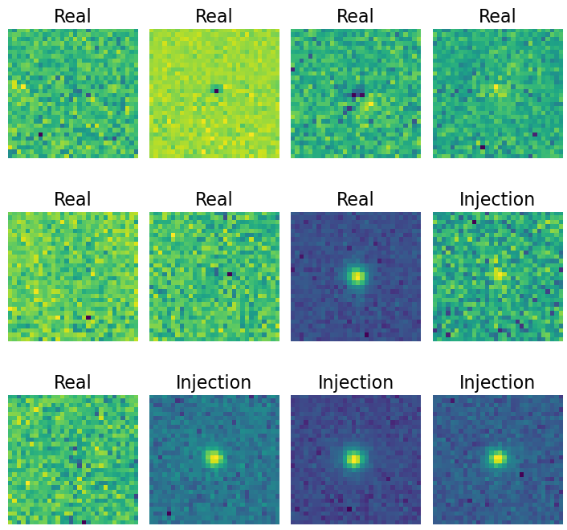
Network Architecture
A simple CNN architecture:
2 2D-convolutional layers with ReLU activation and max-pooling.
2 fully connected layers (FCC) for high-level abstractions and classification output.
Dropout layers to avoid overfitting.
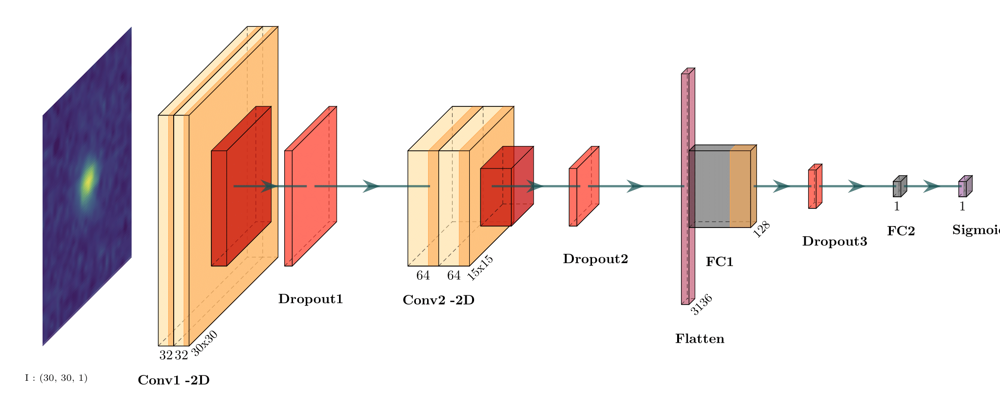
Confusion Matrix
Output Classes and Their Interpretation
Focus:
- Minimize False Negatives (FN) and maximize Sensitivity.
- Monitor False Positives (FP) and Precision.
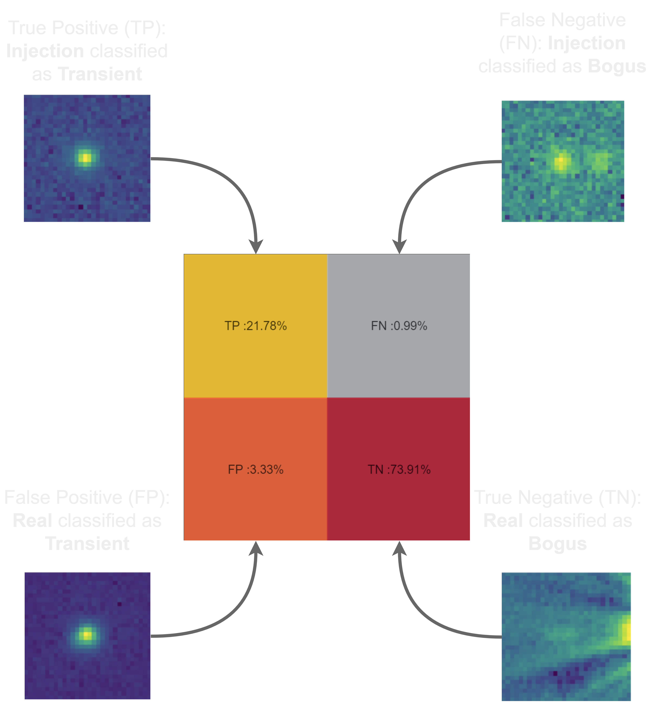
Confusion Matrix
Trained on all different available visits:
Focus:
- Minimize False Negatives (FN) and maximize Sensitivity.
- Monitor False Positives (FP) and Precision.
Analysis:
- Need more insight on how the network is predicting these classes.
Confusion Matrix
Trained on all different available visits, evaluating only high SNR:
$$\text{SNR} \notin [0, 8]$$
Focus:
- Minimize False Negatives (FN) and maximize Sensitivity.
- Monitor False Positives (FP) and Precision.
Analysis:
- Reduction of False Negatives (FN).
- Stable False Positive (FP) detections.
Injected and Real Data Output Probability Comparison
All Data Probability vs Injection Probability Prediction
Using standard metrics and evaluation tools does not work in our situation. There is a need for a deeper understanding of the data.Injected and Real Data Output Probability Comparison
Trained on all different available visits:
We are looking at the output probability comparison between the full dataset and the injection.
Injections should be predicted around 1.
The additional data predicted around 1 are our potential transients.
We wish to see a clear split with fewer 'in-between' predictions.
We also want to reduce or explain the injections predicted around 0.
Injected and Real Data Output Probability Comparison
Trained on all different available visits, evaluating only high SNR:
$$\text{SNR} \notin [0, 8]$$
We are looking at the output probability comparison between the full dataset and the injection.
Injections should be predicted around 1.
The additional data predicted around 1 are our potential transients.
Reduction of the 'in-between' predictions.
By removing low SNR, we target the uncertain classifications of the network.
UMAP: A Visualization Tool for Neural Network Latent Space
UMAP Overview:
- Helps visualize high-dimensional data in 2D.
- Preserves both local and global structure using non-linear dimensionality reduction.
- Builds a nearest-neighbors graph and optimizes it for lower dimensions.
- False Negative: Injection data misclassified as Bogus.
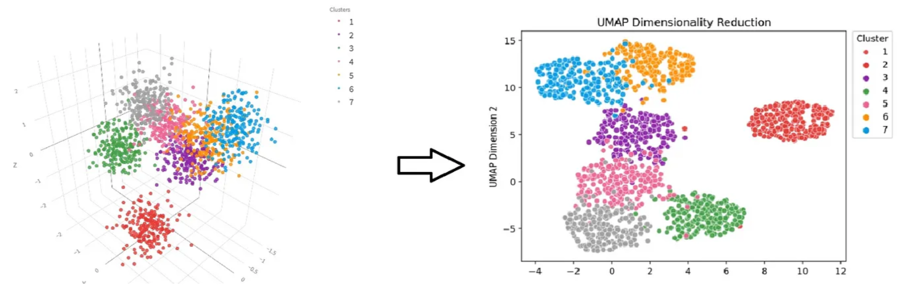
UMAP in Our Case:
- Applied to the output layer of the network.
- Provides a visual tool for better understanding network classifications.
UMAP with Data Class Predictions
Trained on all available visits:
UMAP with Data Class Predictions
Trained on all available visits, evaluated only for high SNR:
UMAP with Data Class Predictions and SNR
Trained on all available visits:
UMAP with Data Class Predictions and SNR
Trained on all available visits, evaluated only for high SNR:
What Are the Potential Improvements for the Model?
Co-Teaching: A Self-Event-Selection Strategy for Weakly Supervised Learning
Two models are trained simultaneously with different views on the same dataset.
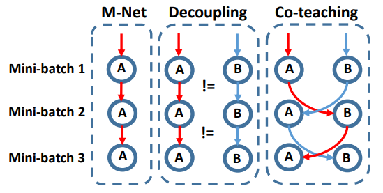

In each batch, each model selects the datum with the smallest loss (most confident predictions).
Avoid training on the wrong labels.
Pros:- Effective for noisy datasets.
- Increases computational cost.
- Assumes symmetrical noise.
Asymmetrical Co-Teaching
Key Changes:
- Implements different remembering rates for each class.
- Better fits the needs of our asymmetrically weakly supervised dataset.
Confusion Matrix
Trained on all available visits:
Focus:
- Minimize false negatives and improve sensitivity.
- Monitor false positives and precision.
Analysis:
- More insight needed into how the network predicts these classes.
Confusion Matrix
Trained on all available visits using the co-teaching method:
Focus:
- Minimize false negatives and improve sensitivity.
- Monitor false positives and precision.
Analysis:
- Further reduction in false negatives.
- Maintained constant false positives.
Injected and Real data output probability comparison
Trained on all different available visits :
We are looking at the output probability comparison between the full data set and
the injection.
Injection should be predicted around 1.
The additional data predicted around 1 are our potential transient.
We wish to see a clear split with the less 'in-between' predictions.
We also want to reduce or explain the injection predicted around 0.
Injected and Real data output probability comparison
Trained on all different available visits, using co
teaching method.
We are looking at the output probability comparison between the full data set and
the injection.
Injection should be predicted around 1.
The additional data predicted around 1 are our potential transient.
Clear split with nearly no 'in-between' predictions.
We also want to reduce or explain the injection predicted around 0.
UMAP with data class predictions.
Trained on all different available visits :
UMAP with data class predictions.
Trained on all different available visits, using co
teaching method.
Light Curve Confirmation :
Adding a matching step to the pipeline on step 4, we build a DIA object table.
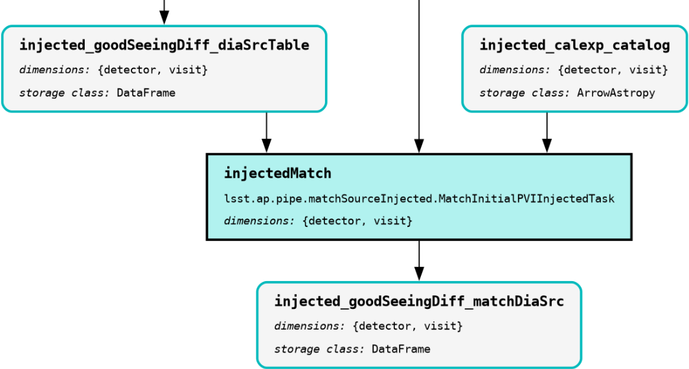